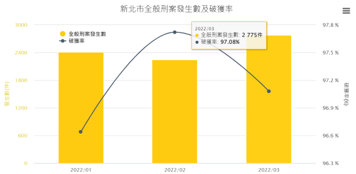

Quick links 快捷服務


News 最新消息
Spotlight Info 宣導專區

Service 為民服務
Topics 主題服務
常見問答 Q&A
預防宣導 Propaganda
警政統計 Statistics
Statistics 統計圖表

Social Networks 雲端社區警政
Contact Us 聯絡我們
新北市政府警察局
- 緊急報案 110
- 本局電話 (02)8072-5454(保您妻兒 無事無事) 、0972-039-968或1999(新北市境內)按9由專⼈為您服務(僅能撥入、不能撥出，請⼩⼼詐騙)
- 傳真號碼(02)2966-8310、(02)2966-8312
- ⼿機簡訊0911-510-105